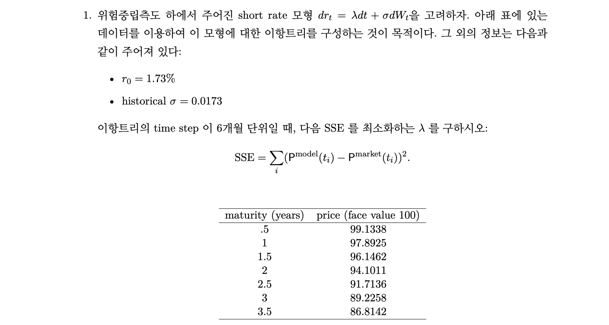
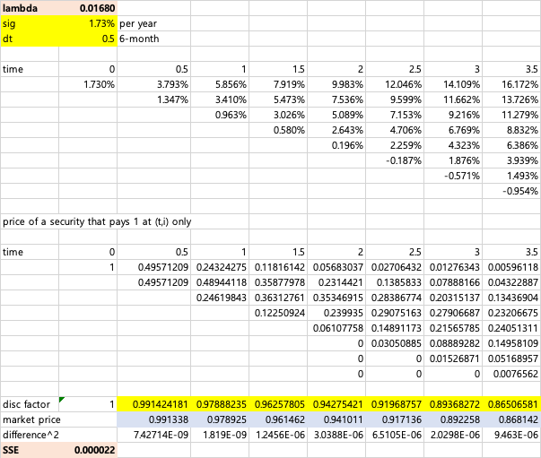
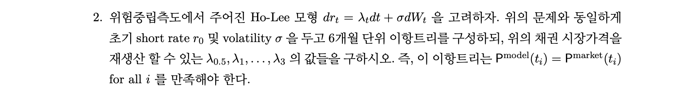
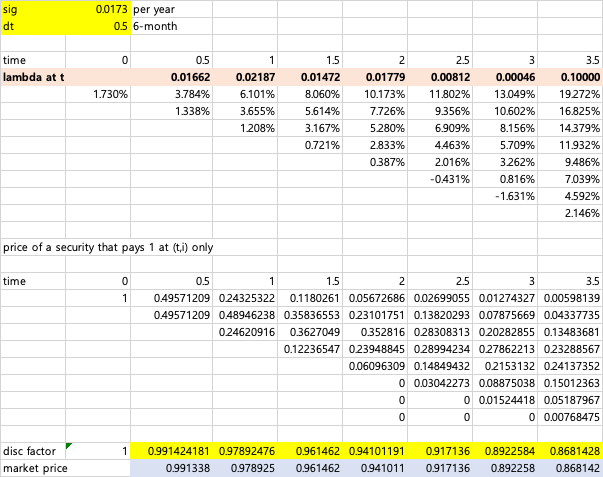
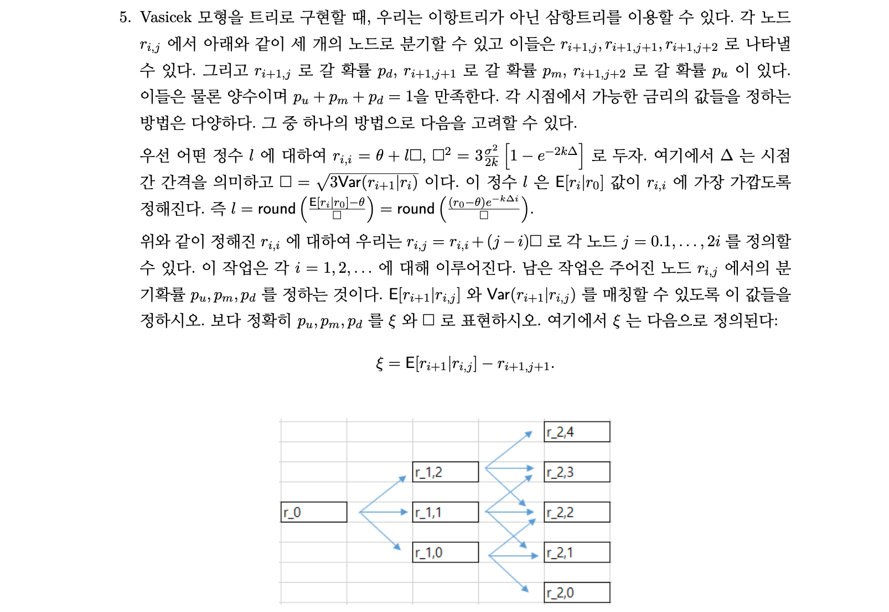

library(tidyverse)
price_market <- tibble(maturity=seq(0.5,3.5,0.5),
price=c(99.1338, 97.8925, 96.1462, 94.1011,
91.7136, 89.2258, 86.8142))
r0=0.0173
sigma=0.0173이자율기간구조 과제3
Problem 1.

Answer
\(\lambda=0.0168\)

Problem 2.

Answer :
\(\lambda_{0.5}\sim \lambda_{3}\)은 각각 0.01662, 0.02187, 0.01472, 0.01779, 0.00812, 0.00046 입니다.

Problem 3.
Answer
다음 3단계로 나누어 Vasicek 모형 하의 무이표채권 가격 수식을 유도하겠습니다.
Integrating Factor Method를 이용하여 Short rate \(r_t\)의 SDE를 풀고 확률분포 유도
Spot rate \(R_t=-\int_0^tr_sds\)의 확률분포 유도
\(X\sim N(\mu,\sigma^2)\)에 대해 정규분포의 적률생성함수가 \(E[e^X]=e^{\mu+\frac{1}{2}\sigma^2}\)임을 이용하여 \(d(t)=E[e^{-\int_0^tr_sds}]\)를 계산
(1) Short rate의 확률분포 계산
\(Vasicek\;:\;dr_t=k(\theta-r_t)dt+\sigma dW_t\Rightarrow\;dr_t+kr_tdt=k\theta dt+\sigma dW_t\)에서,
양변에 Integrating Factor \(e^{kt}\)를 곱하면, \(e^{kt}dr_t+e^{kt}kr_tdt=e^{kt}k\theta dt+e^{kt}\sigma dW_t\)
\(d(e^{kt}r_t)=e^{kt}dr_t+e^{kt}kr_tdt\)임을 통해 \(d(e^{kt}r_t)=e^{kt}k\theta dt+e^{kt}\sigma dW_t\)라고 할 수 있습니다.
양 변을 \((0,t)\)에 대해 적분하면, \(e^{kt}r_t-r_0=\theta(e^{kt}-1) + \sigma\int_0^te^{ks}dW_s\)이 됩니다.
이제, 위 식을 \(r_t\)에 대해 정리하면 현물이자율에 관한 식을 얻을 수 있습니다.
\[r_t=r_0e^{-kt}+\theta(1-e^{-kt})+\sigma \int_0^te^{k(s-t)}dW_s\]
이를 이용하여 \(E[r_t],\;Var[r_t]\)를 계산해보겠습니다.
먼저, Ito integral의 기대값은 0이므로 \(E[\int_0^te^{k(s-t)}dW_s]=0\)이 되며, \(E[r_t]=r_0e^{-kt}+\theta(1-e^{-kt})\)가 됩니다.
다음으로, \(Var[r_t]=\sigma^2 Var[\int_0^te^{k(s-t)}dW_s]\)이므로,
\(Var[\int_0^te^{k(s-t)}dW_s]=E[(\int_0^te^{k(s-t)}dW_s)^2]-E[\int_0^te^{k(s-t)}dW_s]^2_{=0}=E[(\int_0^te^{k(s-t)}dW_s)^2]\),
\(dW_t^2=dt\)이므로, \(E[(\int_0^te^{k(s-t)}dW_s)^2]=E[\int_0^te^{2k(s-t)}ds]=\int_0^te^{2k(s-t)}ds=\frac{1}{2k}(1-e^{-2kt})\)
즉, \(Var[r_t]=\frac{\sigma^2}{2k}(1-e^{-2kt})\)
최종적으로 Short rate의 확률분포는 아래의 정규분포입니다.
\[r_t\sim N\Biggl(\;r_0e^{-kt}+\theta(1-e^{-kt}),\;\frac{\sigma^2}{2k}(1-e^{-2kt})\;\Biggr)\]
(2) \(R_t=-\int_0^tr_sds\)의 확률분포 계산
먼저, \(r_t=r_0e^{-kt}+\theta(1-e^{-kt})+\sigma \int_0^te^{k(s-t)}dW_s\)를 이용하여 \(R_t=-\int_0^tr_sds\)를 표현하겠습니다.
\[\int_0^tr_sds=\int_0^tr_0e^{-ks}ds+\int_0^t\theta(1-e^{-ks})ds+\int_0^t\sigma \int_0^se^{k(u-s)}dW_uds\]
\[\Rightarrow\;\int_0^tr_sds=\frac{r_0(e^{-kt}-1)}{-k}+t\theta-\frac{\theta(e^{-kt}-1)}{-k}+\sigma\int_0^t \int_0^se^{k(u-s)}dW_uds\]
\[\therefore\;-\int_0^tr_sds=\frac{r_0(e^{-kt}-1)}{k}-t\theta-\frac{\theta(e^{-kt}-1)}{k}-\sigma\int_0^t \int_0^se^{k(u-s)}dW_uds\]
이제, \(-\int_0^tr_sds=R_t\)라고 하겠습니다.
위 (1)의 방법과 유사하게 \(E[\int_0^t \int_0^se^{k(u-s)}dW_uds]=0\)이므로, \(R_t\)의 기대값은 아래와 같습니다.
\[E[R_t]=\frac{r_0(e^{-kt}-1)}{k}-t\theta-\frac{\theta(e^{-kt}-1)}{k}\]
다음으로, \(Var[R_t]=Var[-\sigma\int_0^t \int_0^se^{k(u-s)}dW_uds]=\sigma^2Var[\int_0^t \int_0^se^{k(u-s)}dW_uds]\)로 표현할 수 있습니다.
해당 이중적분식은 푸비니정리에 따라 \(\int_0^t \int_0^se^{k(u-s)}dW_uds=\int_0^t \int_u^te^{k(u-s)}dsdW_u=\int_0^t \frac{e^{k(u-t)}-1}{-k} dW_u\)입니다.
따라서, \(Var[\int_0^t \int_0^se^{k(u-s)}dW_uds]=Var[\int_0^t \frac{e^{k(u-t)}-1}{-k} dW_u]\)이고, \(Var[X]=E[X^2]-E[X]^2\)임을 적용하면,
\[Var[\int_0^t \frac{e^{k(u-t)}-1}{-k} dW_u]=E[(\int_0^t \frac{e^{k(u-t)}-1}{-k} dW_u)^2]-E[\int_0^t \frac{e^{k(u-t)}-1}{-k} dW_u]^2=E[(\int_0^t \frac{e^{k(u-t)}-1}{-k} dW_u)^2]\]
\(dW_t^2=dt\)이므로, \(E[(\int_0^t \frac{e^{k(u-t)}-1}{-k} dW_u)^2]=E[\int_0^t (\frac{e^{k(u-t)}-1}{-k})^2 du]=\int_0^t \frac{e^{2k(u-t)}-2e^{k(u-t)}+1}{k^2} du\)
\(\Rightarrow\;=\frac{1}{k^2}(\frac{1-e^{-2kt}}{2k}-\frac{2(1-e^{-kt})}{k}+t)\)
정리하면, \(R_t\)의 분산 및 확률분포는 아래와 같습니다.
\[Var[R_t]=\sigma^2Var[\int_0^t \int_0^se^{k(u-s)}dW_uds]=\frac{\sigma^2}{k^2}(\frac{1-e^{-2kt}}{2k}-\frac{2(1-e^{-kt})}{k}+t)\]
\[R_t\sim N\Biggl(\;\frac{r_0(e^{-kt}-1)}{k}-t\theta-\frac{\theta(e^{-kt}-1)}{k},\;\frac{\sigma^2}{k^2}(\frac{1-e^{-2kt}}{2k}-\frac{2(1-e^{-kt})}{k}+t)\;\Biggr)\]
(2) \(d(t)=E[e^{-\int_0^tr_sds}]\) 유도
우리는 정규분포를 따르는 확률변수 \(X\)에 대해, \(E[e^X]=e^{\mu+\frac{1}{2}\sigma^2}\)임을 알고 있습니다.
따라서 \(d(t)=E[e^{-\int_0^tr_sds}]=E[e^{R_t}]=e^{E[R_t]+\frac{1}{2}Var[R_t]}\)이므로, \(R_t\)가 정규분포를 따르고 평균과 분산을 알고있으면 \(d(t)\)를 알 수 있습니다.
위 결과를 통해, \(d(t)=e^{E[R_t]+\frac{1}{2}Var[R_t]}\)를 정리하겠습니다.
\[ E[R_t]+\frac{1}{2}Var[R_t]=\frac{r_0(e^{-kt}-1)}{k}-t\theta-\frac{\theta(e^{-kt}-1)}{k}+\frac{1}{2}\biggl(\frac{\sigma^2}{k^2}(\frac{1-e^{-2kt}}{2k}-\frac{2(1-e^{-kt})}{k}+t)\biggr) \]
여기서, \(B(t)=\frac{1-e^{-kt}}{k}\) 라고 하면,
\[ =-B(t)r_0-\bigl(t-B(t)\bigr)\theta+\frac{\sigma^2}{2k^2}\bigg(t-2B(t)+\frac{(1+e^{-kt})(1-e^{-kt})}{2k}\bigg) \]
\(B(t)=\frac{1-e^{-kt}}{k}\)에서, \(e^{-kt}=1-kB(t)\)이므로,
\[ =-B(t)r_0-\bigl(t-B(t)\bigr)\theta+\frac{\sigma^2}{2k^2}\bigg(t-2B(t)+\frac{1}{2}(2-kB(t))B(t)\bigg) \]
\[ =-B(t)r_0-\bigl(t-B(t)\bigr)\theta+\frac{\sigma^2}{2k^2}\bigg(t-B(t)-\frac{kB(t)^2}{2}\bigg) \]
\[ =-B(t)r_0-\bigl(t-B(t)\bigr)\theta+\frac{\sigma^2}{2k^2}\big(t-B(t)\big)-\frac{\sigma^2}{2k^2}\big(\frac{kB(t)^2}{2}\big) \]
\[ =-B(t)r_0+\bigl(B(t)-t\bigr)\theta-\frac{\sigma^2}{2k^2}\big(B(t)-t\big)-\frac{(\sigma B(t))^2}{4k} \]
\[ =-B(t)r_0+\bigl(B(t)-t\bigr)\bigg(\theta-\frac{\sigma^2}{2k^2}\bigg)-\frac{(\sigma B(t))^2}{4k} \]
\[ \therefore d(t)=A(t)e^{-B(t)r_0}\;\;where\;\;B(t)=\frac{1-e^{-kt}}{k},\;\;A(t)=e^{\bigl(B(t)-t\bigr)\bigg(\theta-\frac{\sigma^2}{2k^2}\bigg)-\frac{(\sigma B(t))^2}{4k}} \]
Problem 4.
Answer
1번의 모수값과 다양한 \(k,\theta\)의 초기값 조합을 통해 SSE를 최소화시키는 최적화를 반복수행하겠습니다.
R 코드로 초기값 조합에 따른 최적화를 300회 수행한 결과,
SSE를 최소화시키는 \(k=0.0134,\;\;\theta=1.05\)이며, 이때의 SSE는 0.19(액면 100원 기준) 및 초기값은 \(k=1,\;\theta=0.05\)입니다.
vasicek_discount <- function(r0,sigma,k,theta,t){
B=(1-exp(-k*t))/k
A=exp((B-t)*(theta-sigma^2/(2*k^2))-(sigma*B)^2/(4*k))
vasicek=A*exp(-B*r0)
return(vasicek)
}
SSE_vasicek <- function(params){
SSE=(vasicek_discount(0.0173,0.0173,params[1],params[2],price_market$maturity)*100-price_market$price)^2 %>% sum()
return(SSE)
}
montecarlo <- tibble(k0=double(),theta0=double(),k=double(),theta=double(),SSE=double())
for(k in seq(0.1,3,0.1)){
for(theta in seq(0.01,0.1,0.01)){
tmp <- optim(par=c(k,theta),SSE_vasicek)
tmp_tibble <- tibble(k0=k,theta0=theta,k=tmp$par[1],theta=tmp$par[2],SSE=tmp$value)
montecarlo <- montecarlo %>% bind_rows(tmp_tibble)
}
}
montecarlo %>% arrange(SSE) %>% slice(1:5)# A tibble: 5 × 5
k0 theta0 k theta SSE
<dbl> <dbl> <dbl> <dbl> <dbl>
1 0.1 0.05 0.0134 1.05 0.190
2 0.1 0.03 0.0160 0.889 0.191
3 0.1 0.07 0.0171 0.833 0.192
4 0.2 0.02 0.0174 0.818 0.192
5 0.1 0.06 0.0181 0.788 0.192Problem 5.

Answer
먼저, 문제 3에서 Vasicek모형의 short rate에 대한 확률분포를 아래와 같이 유도하였습니다.
\[ r_t\sim N\Biggl(\;r_0e^{-kt}+\theta(1-e^{-kt}),\;\frac{\sigma^2}{2k}(1-e^{-2kt})\;\Biggr) \]
이를 이용하면 시간간격이 \(\Delta t\)로 주어진 \(r_i\)에 대하여, \(Var[r_{i+1}|r_i]=\frac{\sigma^2}{2k}(1-e^{-2k\Delta t})\)임을 알 수 있습니다.
즉, 문제에서 주어진 \(\square^2=3\frac{\sigma^2}{2k}(1-e^{-2k\Delta})=3Var[r_{i+1}|r_i]\) 이며, 이는 \(\square\)가 Vasicek trinomial tree에서 상승 및 하락폭임을 의미합니다.
따라서 문제에서 주어진 trinomial node에서 상승/보합/하락시의 short rate는 다음과 같습니다.
\[ r_{i+1,u}=r_{i+1,j+2}=r_{i+1,j+1}+\square,\;r_{i+1,m}=r_{i+1,j+1},\;r_{i+1,d}=r_{i+1,j}=r_{i+1.j+1}-\square \]
한편, trinomial node에서 상승/보합/하락확률이 각각 \(p_u,p_m,p_d\)이므로 상승/보합/하락시의 short rate의 평균은 \(E[r_{i+1}|r_i]\)와 같아야하고, 분산 역시 \(Var[r_{i+1}|r_i]=\square^2/3\)과 같아야합니다.
이러한 평균과 분산의 equilibrium을 수식으로 표현하면 아래와 같습니다.
\(1.\;\;E[r_{i+1}|r_{i,j}]=r_ie^{-k\Delta t}+\theta(1-e^{-k\Delta t})=p_ur_{i+1,j+2}+p_mr_{i+1,j+1}+p_dr_{i+1,j}\)
\(2.\;\;Var[r_{i+1}|r_{i,j}]=\frac{\sigma^2}{2k}(1-e^{-2k\Delta t})=p_u\big(r_{i+1,j+2}-E[r_{i+1}|r_i]\big)^2+p_m\big(r_{i+1,j+1}-E[r_{i+1}|r_i]\big)^2+p_d\big(r_{i+1,j}-E[r_{i+1}|r_i]\big)^2\)
이제, 두 식을 만족하는 \(p_{u,m,d}\)를 구하도록 하겠습니다.
Trinomial node의 변동폭, \(\xi=E[r_{i+1}|r_{i,j}]-r_{i+1,j+1}\) 및 \(p_u+p_m+p_d=1\)임을 이용하면,
\[ 1.\;\;E[r_{i+1}|r_{i,j}]=p_u(r_{i+1,j+1}+\square)+p_mr_{i+1,j+1}+p_d(r_{i+1,j+1}-\square)=r_{i+1,j+1}+(p_u-p_d)\square\;\Rightarrow\;p_u-p_d=\frac{\xi}{\square}...(1) \]
\[ 2.\;\;Var[r_{i+1}|r_{i,j}]=p_u\big(-\xi+\square\big)^2+p_m\big(-\xi\big)^2+p_d\big(-\xi-\square\big)^2=\xi^2-2\xi\,\square(p_u-p_d)+\square^2(p_u+p_d)\bigg(=\frac{\square^2}{3}\bigg)...(2) \]
이제, \(p_{u,m,d}\)를 \(\square,\;\xi\)로 표현할 수 있습니다.
\[ (1)\;p_u-p_d=\frac{\xi}{\square}\;\;\&\;\;(2)\;\xi^2-2\xi\,\square(p_u-p_d)+\square^2(p_u+p_d)=\frac{\square^2}{3}\;\;\&\;\;(3)\;p_u+p_m+p_d=1 \]
(1), (3)을 이용하면, \((2)\;\xi^2-2\xi\,\square(\frac{\xi}{\square})+\square^2(1-p_m)=\frac{\square^2}{3}\)
\[ \therefore\;p_m=\frac{2}{3}-\frac{\xi^2}{\square^2} \]
(3)+(1)에서, \(2p_u+p_m=1+\frac{\xi}{\square}\)
\[ \therefore\;p_u=\frac{1}{2}+\frac{\xi}{2\square}-\frac{p_m=\frac{2}{3}-\frac{\xi^2}{\square^2}}{2}=\frac{1}{6}+\frac{\xi(\xi+\square)}{2\square^2} \]
(3)-(1)에서, \(2p_d+p_m=1-\frac{\xi}{\square}\)
\[ \therefore\;p_u=\frac{1}{2}-\frac{\xi}{2\square}-\frac{p_m=\frac{2}{3}-\frac{\xi^2}{\square^2}}{2}=\frac{1}{6}+\frac{\xi(\xi-\square)}{2\square^2} \]